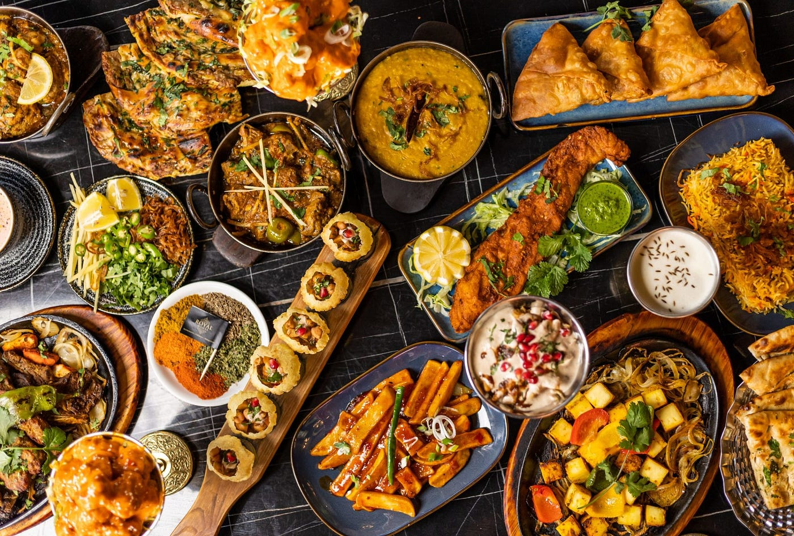
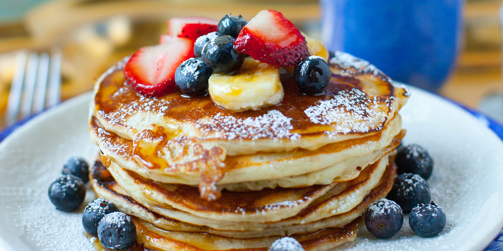
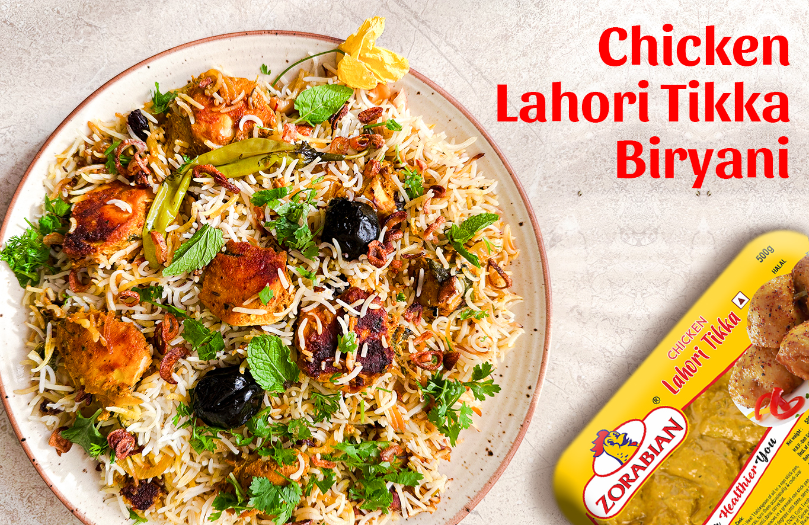
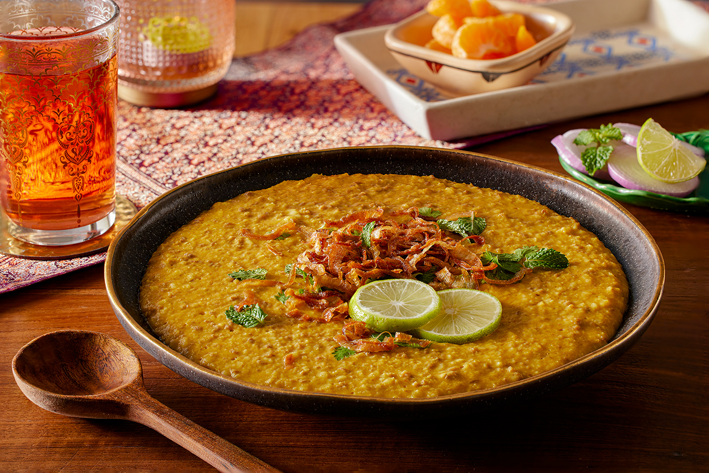

Nihari is a popular Pakistani dish made with slow-cooked meat and a flavorful sauce.

Pakistan is known for its rich and diverse culinary heritage, offering a wide array of delicious dishes that reflect the country's cultural diversity. Some popular food recipes in Pakistan include:

Pan Cake Pancakes are a popular breakfast food enjoyed by people around the world. They are made from a simple batter of flour, eggs, milk, and baking powder, which is cooked on a hot griddle or frying pan. Pancakes are known for their soft, fluffy texture and can be served with a variety of toppings, such as maple syrup, butter, fresh fruit, chocolate chips, or whipped cream. They are easy to make and can be customized with different flavors and ingredients, making them a favorite meal for both children and adults.
Pan Cake Pancakes are a popular breakfast food enjoyed by people around the world. They are easy to make and can be customized with different flavors and ingredients, making them a favorite meal for both children and adults.
Pan Cake Pancakes are a popular breakfast food enjoyed by people around the world. They are made from a simple batter of flour, eggs, milk, and baking powder, which is cooked on a hot griddle or frying pan. Pancakes are known for their soft, fluffy texture and can be served with a variety of toppings, such as maple syrup, butter, fresh fruit, chocolate chips, or whipped cream. They are easy to make and can be customized with different flavors and ingredients, making them a favorite meal for both children and adults.
Pan Cake Pancakes are a popular breakfast food enjoyed by people around the world.Pancakes are known for their soft, fluffy texture and can be served with a variety of toppings, such as maple syrup, butter, fresh fruit, chocolate chips, or whipped cream. They are easy to make and can be customized with different flavors and ingredients, making them a favorite meal for both children and adults.
Pan Cake Pancakes are a popular breakfast food enjoyed by people around the world. They are made from a simple batter of flour, eggs, milk, and baking powder, which is cooked on a hot griddle or frying pan. Pancakes are known for their soft, fluffy texture and can be served with a variety of toppings, such as maple syrup, butter, fresh fruit, chocolate chips, or whipped cream. They are easy to make and can be customized with different flavors and ingredients, making them a favorite meal for both children and adults.
Nihari is a popular Pakistani dish made with slow-cooked meat and a flavorful sauce.

Tikka Biryani is a delicious rice dish made with marinated chicken and aromatic spices.

Haleem is a traditional Pakistani dish made with wheat, lentils, and meat, slow-cooked to perfection.

Kofty are delicious meatballs, often served with a rich gravy or in a biryani.

Chapli Kebab is a spicy and flavorful kebab.

Chicken Karahi is a flavorful Pakistani dish made with chicken cooked in a spicy tomato-based sauce.

Chicken Biryani is a delicious rice dish made with marinated chicken and aromatic spices.

Beef Biryani is a delicious rice dish made with marinated beef and aromatic spices.